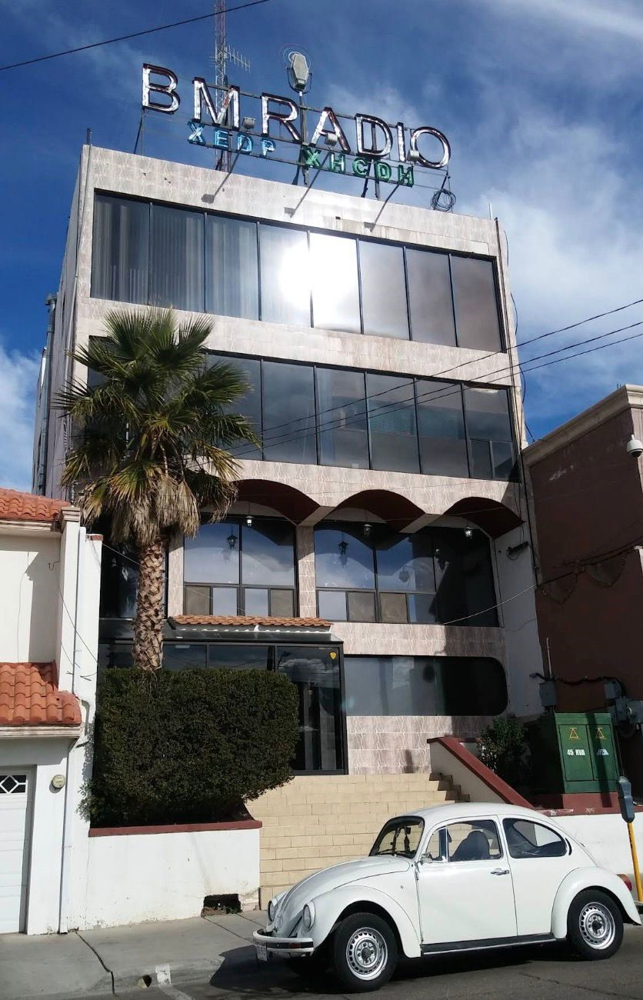
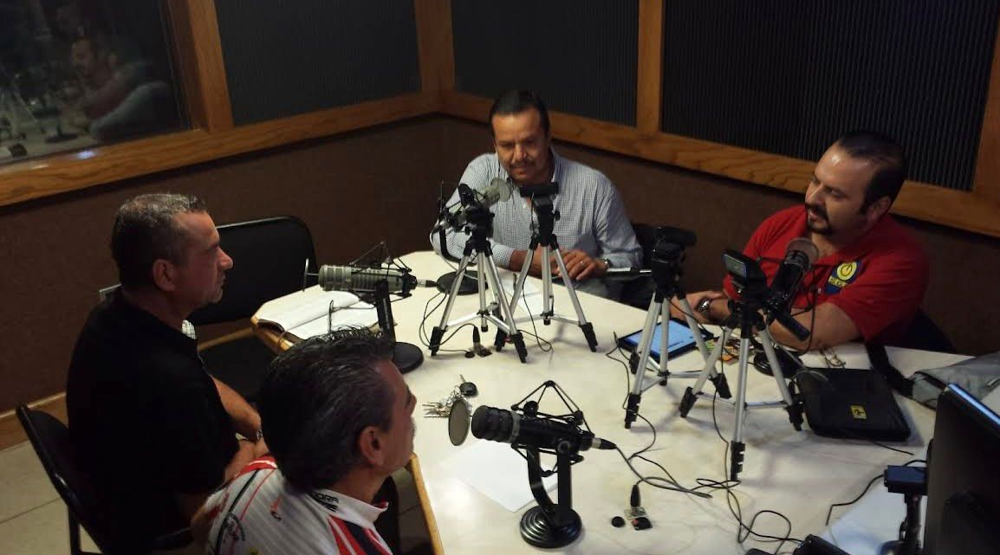

🎧 Radio en vivo y entretenimiento
La mejor música desde Cuauhtémoc, Chihuahua
BM Radio nace en Cuauhtémoc gracias a Israel Beltrán Montes, quien fue locutor, empresario y político.
La empresa comenzó en los años 90, cuando fundó el grupo de radiodifusoras. Su primera estación importante fue XEDP-AM (710 AM), concesionada en 1976.
Con el tiempo, BM Radio creció hasta convertirse en una cadena regional en Chihuahua, con más de 10 estaciones.
Muchas estaciones migraron de AM a FM alrededor de 2011. También crearon contenido como “Cuestión de Minutos”.
Calle Segunda 437, Zona Centro, Cuauhtémoc, Chihuahua

